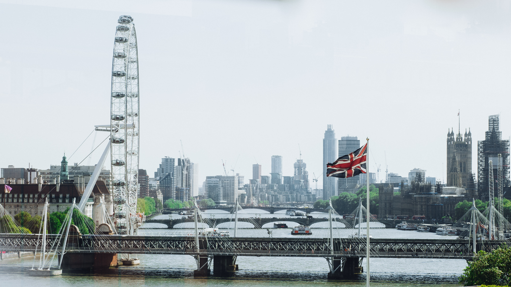
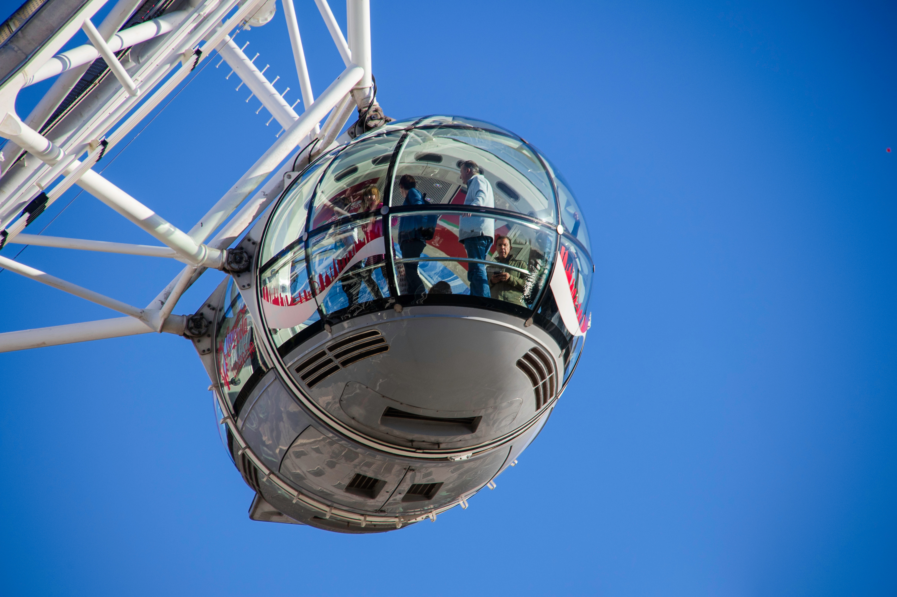

London
London Eye
The Giant Ferris Wheel
The London Eye is a giant Ferris wheel on the South Bank of the River Thames in London. It is Europe's tallest Ferris wheel, is the most popular paid tourist attraction in the United Kingdom with over 3.75 million visitors annually, and has made many appearances in popular culture.
The structure is 135 metres (443 ft) tall and the wheel has a diameter of 120 metres (394 ft). When it opened to the public in 2000 it was the world's tallest Ferris wheel. Its height was surpassed by the 525-foot (160 m) Star of Nanchang in 2006, the 165 metres (541 ft) Singapore Flyer in 2008, and the 550-foot tall (167.6 m) High Roller (Las Vegas) in 2014. Supported by an A-frame on one side only, unlike the taller Nanchang and Singapore wheels, the Eye is described by its operators as "the world's tallest cantilevered observation wheel".
The London Eye offered the highest public viewing point in London until it was superseded by the 245-metre (804 ft) high observation deck on the 72nd floor of The Shard, which opened to the public on 1 February 2013.
The London Eye adjoins the western end of Jubilee Gardens (previously the site of the former Dome of Discovery), on the South Bank of the River Thames between Westminster Bridge and Hungerford Bridge beside County Hall, in the London Borough of Lambeth.
